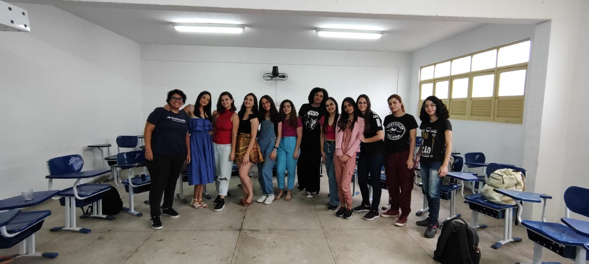
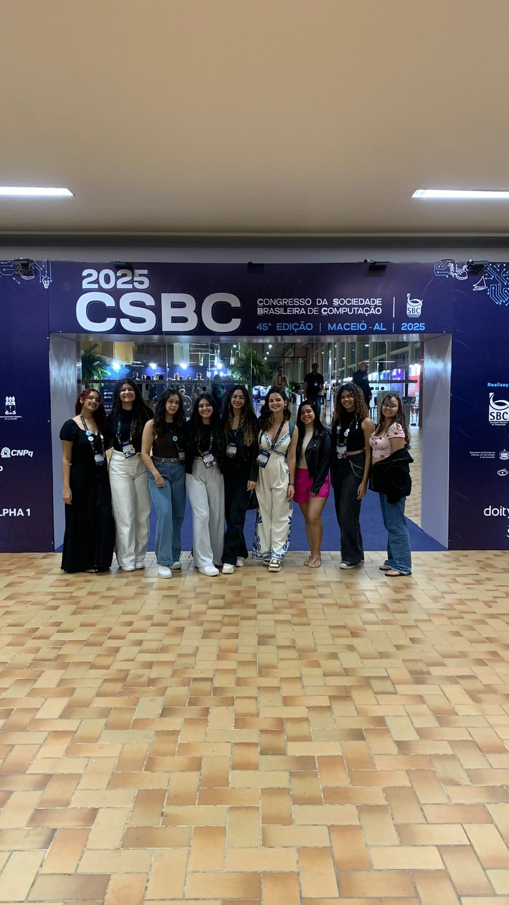
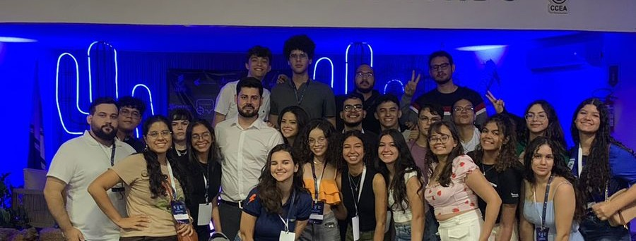
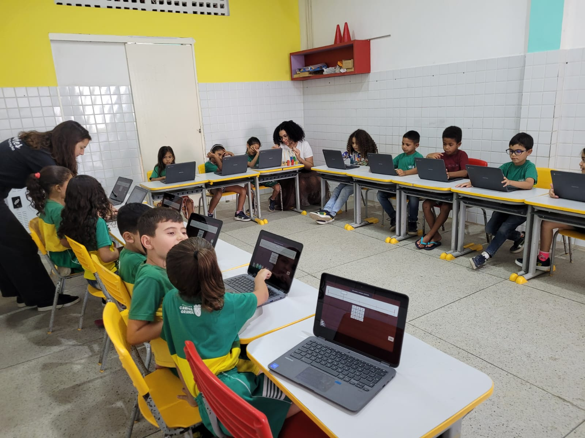
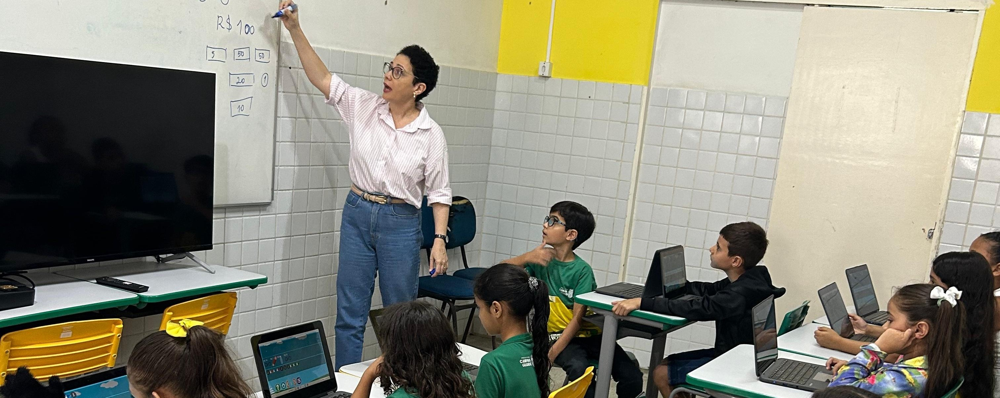
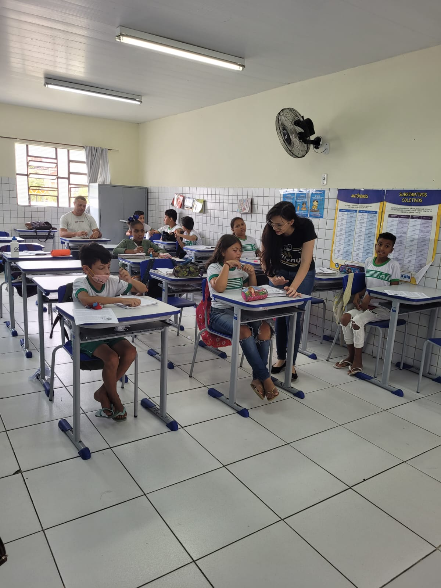
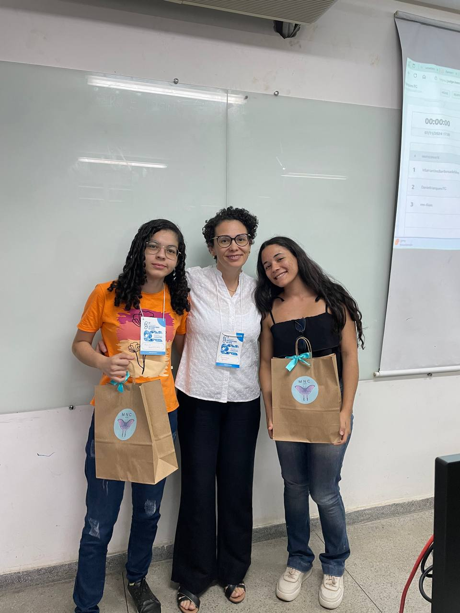
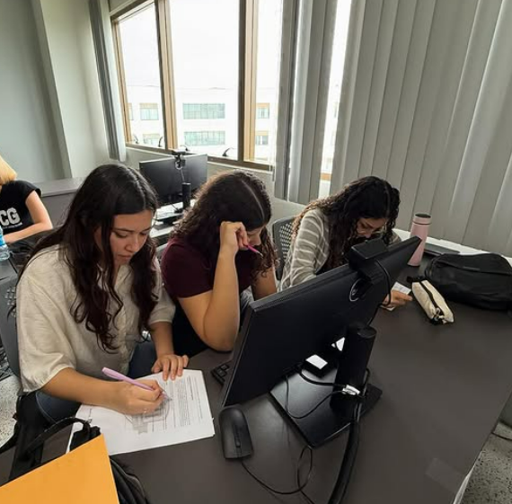

Prepare o seu celular para participar da dinâmica interativa.
Escaneie o QR Code ao lado ou acesse o site kahoot.it e aguarde o PIN que será gerado na tela principal.
> APONTE A CÂMERA DO CELULAR